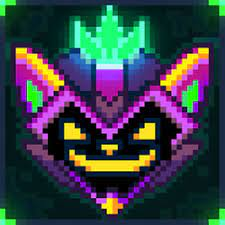
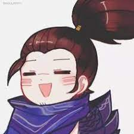
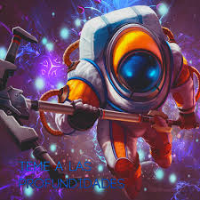
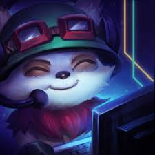

NUESTROS INVOCADORES
Nuestra selección de profesores particulares de league of legends.
Nuestros invocadores se encargaran de volverte alguien capaz de llegar a challenger, trabajar en equipo, saber atacar, saber defender y en generel volverte una maquina en el mundio de Runeterra.
¡ANIMATE Y ELIGE AL QUE MAS TE CONVENGA!



Alejandro
23 años
Jugador de League of Legends con 8 años de experiencia y peak elo de de diamante 1 da clases personalizadas para mejorar en todos los ámbitos del juego. Especialmente en el rol de support.
Luis
17 años
Jugador Amateur, clases de coaching, fases de linea, macro, matchups... lo que necesites para subir elo
David
22 años
Coatch novato en LoL, Jugador experimentado de elo Alto, Con tiempo libre.
Marcos
20 años
Llevo dos años jugando a League of Legends y puedo ayudar a nuevos jugadores. No soy profesional pero si tengo buena experiencia y consejos.

Lucia
19 años
Por las mañanas estudiante de mecatrónica, por las noches el mejor Top laner de LAN
Copyright League of Coaching© 2023 Todos los derechos reservados.
marcas comerciales o marcas registradas propiedad de League of Coaching.